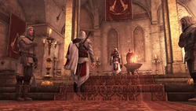
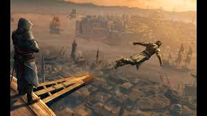

Inițierea
Inițierea în Ordinul Asasinilor a fost o tradiție ceremonială susținută de-a lungul anilor de existență. A fost un ritual de trecere simbolizând momentul în care un ucenic asasin a devenit membru cu drepturi depline al Ordinului și a jurat să își dedice viața pentru a proteja libertatea umanității.
Inițierea a fost efectuată de Mentorul Frăției, alături de alți câțiva asasini. Ceremonia are loc în trei părți: jurământul, marcarea degetului inelar stâng al inițiatului și un Salt al Credinței.
În primul rând, participanții au stat în jurul unei torțe aprinse, cu un asasin care recita Crezul, la care inițiatul răspunde la rândul său. Ultimele cuvinte, maxima Crezului, sunt rostite de toți cei prezenți: "Acolo unde alții urmează orbește adevărul, nu uitați ... Nimic nu este adevărat. Acolo unde alții sunt limitați de moralitate sau de lege, nu uitați ...Totul este permis. Lucrăm în întuneric pentru a servi lumina. Suntem asasini!"
Apoi, degetul inelar stâng al inițiatului este marcat, folosind clești care au fost încălziți în torța menționată anterior.
În cele din urmă, inițiatul face un Salt de credință pentru a-și semnifica încrederea în Ordin și colegii lor asasini - uneori precedați de asasinii prezenți care au făcut și ei un salt de credință - după care, inițiatul este considerat un membru cu drepturi depline al Ordinului.
În timpurile moderne, inițierea devine mult mai puțin formală și relevantă. În 2000, mentorul l-a inițiat pe Daniel Cross în Ordin, recompensându-l cu o lamă ascunsă veche și primindu-l verbal în Ordin. Cu toate acestea, anumiți asasini au efectuat încă porțiuni din ritual, deși marcarea degetului a fost neobișnuită. La sfârșitul secolului anului, Clay Kaczmarek a fost inițiat în mod tradițional de William Miles, mergând printre viitorii săi frați înainte de a face un salt de credință, urmând obiceiurile din trecut.